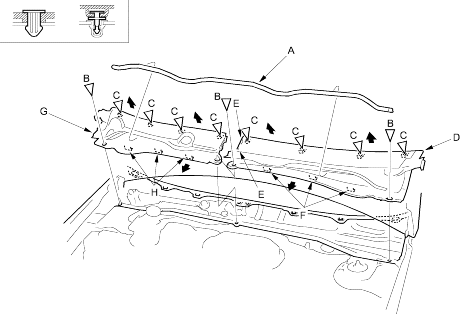

Remove the windshield wiper arms (see page 22-179).
Remove the windshield side trim from both sides (see step 1 on page 20-176).
Pull the hood rear seal (A) away from the cowl covers, then remove it and using a clip remover, detach the clips (B) from the cowl covers. Take care not to scratch the cowl covers.
Fastener Locations
B : Clip, 3
C : Clip, 8

Detach the clips (C) by carefully pulling the passenger's cowl cover (D) upward, to release the hooks (E) and pull out the cover forward to release the hooks (F), then remove the cover. Take care not to scratch the body.
Detach the clips (C) by carefully pulling the driver's cowl cover (G) upward and pull out the cover forward to release the hooks (H), then remove the cover. Take care not to scratch the body.
Install the covers in the reverse order of removal and note these items:
Replace any damaged clips.
Reinstall both windshield side trim properly (see step 24 on page 20-181).
 : Clip, 3
: Clip, 3